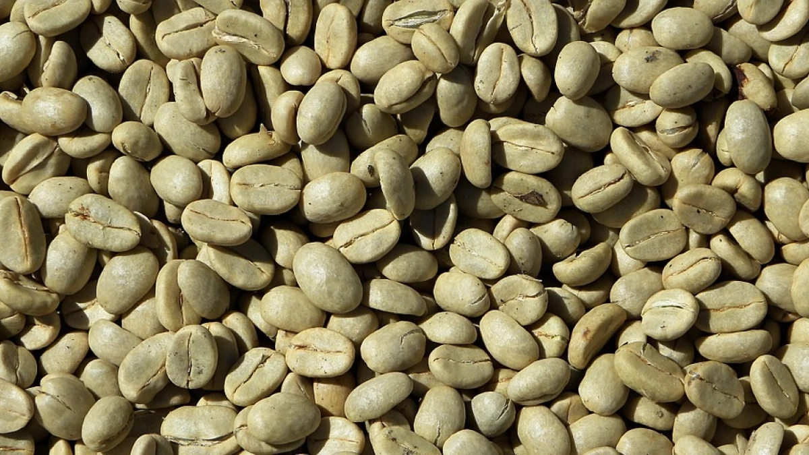

Origen e Historia del Café
El cultivo del café se remonta a las zonas altas de Etiopía. Con los siglos, la bebida se expandió por todo el mundo convirtiéndose en un ritual diario.

"El buen café empieza mucho antes de la taza: empieza con la dedicación en la tierra."
Posterior a la cita, este párrafo demuestra la selección del hermano general (blockquote ~ p).